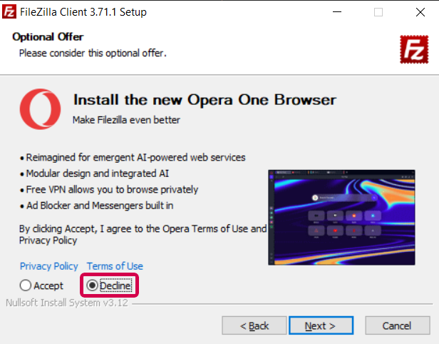
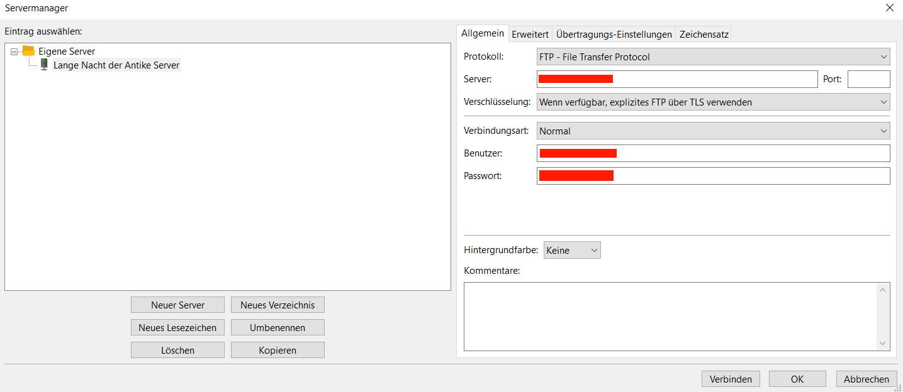
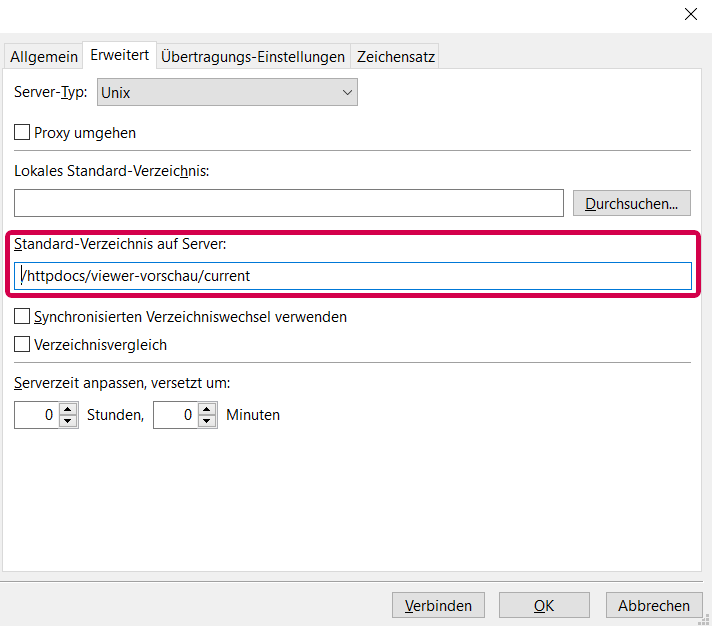
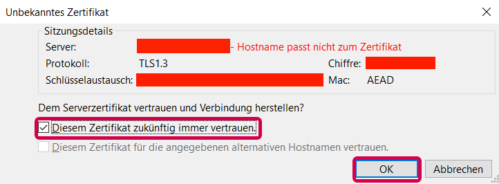
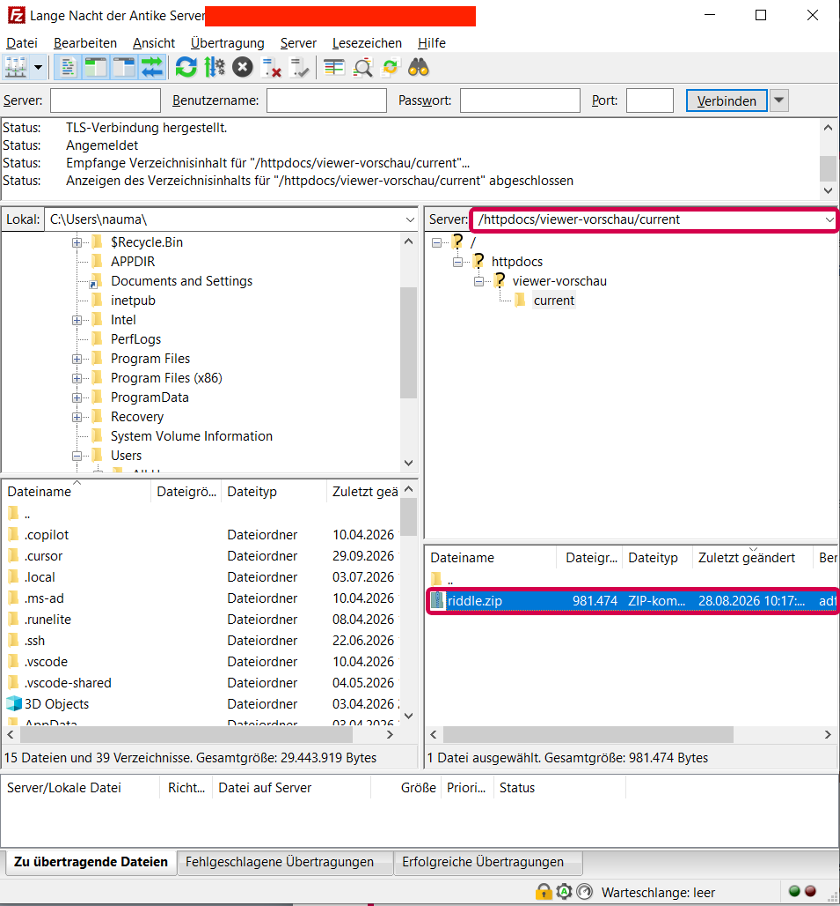
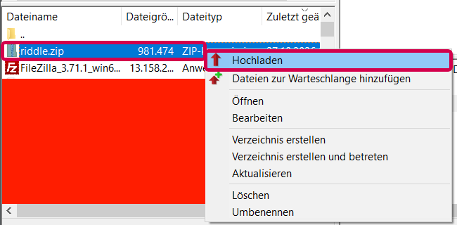
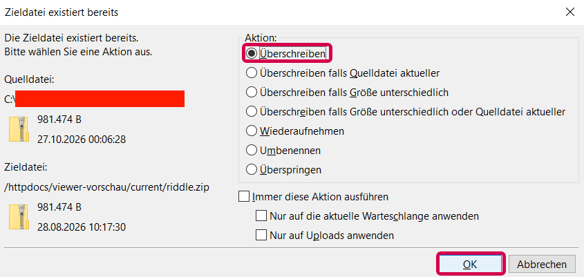
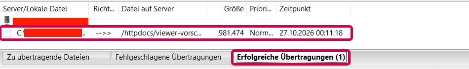

Mit dem kostenlosen Programm FileZilla
Mit dieser Anleitung ersetzt du das Rätselspiel auf der Webseite durch deine neue Version aus dem Editor.
Beim ersten Mal dauert das etwa 15 Minuten, weil du FileZilla installierst und die Verbindung einrichtest. Danach verbindest du dich nur noch und machst die Schritte 4 bis 7, das dauert etwa 2 Minuten.
| Server | <SERVER> |
|---|---|
| Port | <PORT> |
| Benutzername | <BENUTZERNAME> |
| Passwort | <PASSWORT> |
| Zielordner | /httpdocs/viewer-vorschau/current |
Die rot umrandeten Werte stehen in deinen Zugangsdaten. Gib dein Passwort nie an andere weiter.
Außerdem brauchst du die neue Datei riddle.zip. Du bekommst sie im Editor über Exportieren.
Wichtig: Bewahre die letzte funktionierende Version auf. Lege jede riddle.zip, die auf der Webseite gut funktioniert hat, in einen eigenen Ordner, z. B. „Rätsel-Sicherung“. Wenn eine neue Version Fehler hat, kannst du die alte damit wieder hochladen (siehe Abschnitt 8).
https://filezilla-project.org.
Lade FileZilla nur von dort herunter, nicht von anderen Download-Seiten.Achtung: Zusatzangebote ablehnen. Während der Installation bietet FileZilla manchmal andere Programme an, z. B. einen Virenscanner oder Browser. Diese brauchst du nicht. Klicke in diesem Fenster auf Decline bzw. Ablehnen.

Du speicherst die Verbindung einmal im Servermanager. Danach verbindest du dich mit zwei Klicks.
| Protokoll | FTP - File Transfer Protocol |
|---|---|
| Server | <SERVER> |
| Port | <PORT> (leer lassen, wenn in deinen Zugangsdaten kein Port steht) |
| Verschlüsselung | Wenn verfügbar, explizites FTP über TLS verwenden |
| Verbindungsart | Normal |
| Benutzer | <BENUTZERNAME> |
| Passwort | <PASSWORT> |

Weiter geht es auf der nächsten Seite, noch nicht auf Verbinden klicken.
/httpdocs/viewer-vorschau/current

Beim nächsten Mal: Öffne FileZilla, klicke auf Datei > Servermanager, wähle „Lange Nacht der Antike Server“ und klicke auf Verbinden.
FileZilla zeigt zwei Seiten. Links ist dein Computer (Lokal), rechts der Server (Server).
/httpdocs/viewer-vorschau/current stehen.
current mit der bisherigen riddle.zip.Gelbe Ordner mit Fragezeichen sind normal. Das Fragezeichen bedeutet nur, dass FileZilla diesen Ordner noch nicht geöffnet hat. Es ist kein Fehler.
Ändere nichts außerhalb von current.
Auf dem Server liegen auch andere Teile der Webseite.
Verschiebe, lösche oder überschreibe dort nichts.
Wenn oben rechts ein anderer Pfad steht, tippe /httpdocs/viewer-vorschau/current in das Feld und drücke Enter.
Die Datei muss genau riddle.zip heißen. Die Webseite lädt nur eine Datei mit diesem Namen.
Häufiger Fehler: Wenn schon eine riddle.zip in deinem Download-Ordner liegt, nennt der Browser die neue Datei z. B. riddle (1).zip oder riddle(2).zip. Lädst du diese hoch, ändert sich auf der Webseite nichts.
Windows blendet die Endung .zip oft aus. Dann siehst du nur riddle oder riddle (1). Schalte die Endungen im Explorer ein:

current auf dem Server.

/viewer-vorschau/.
Ist die Seite schon offen, lade sie neu (Taste F5, am Mac Cmd + R).| Problem | Lösung |
|---|---|
| Auf der Webseite ist noch das alte Rätsel zu sehen. | Prüfe den Dateinamen (Abschnitt 5): Rechts auf dem Server darf nur riddle.zip neu sein, keine riddle (1).zip. Prüfe den Ordner (Abschnitt 4). Teste in einem privaten Fenster. |
| FileZilla kann sich nicht verbinden. | Vergleiche Server, Port, Benutzername und Passwort im Servermanager Zeichen für Zeichen mit deinen Zugangsdaten. Prüfe die Einstellung bei Verschlüsselung (Abschnitt 3). |
| Das Spiel lädt nicht oder zeigt eine Fehlermeldung. | Lade die letzte funktionierende riddle.zip aus deinem Ordner „Rätsel-Sicherung“ wieder hoch, genau wie in Abschnitt 6. Damit ist das alte Spiel sofort wieder online. Prüfe danach die neue Version im Editor. |
Du hast versehentlich etwas außerhalb von current verändert. |
Mache nichts weiter rückgängig und melde dich sofort beim Kontakt unten. |
Hilfe: Wenn du nicht weiterkommst, wende dich an <KONTAKT>.